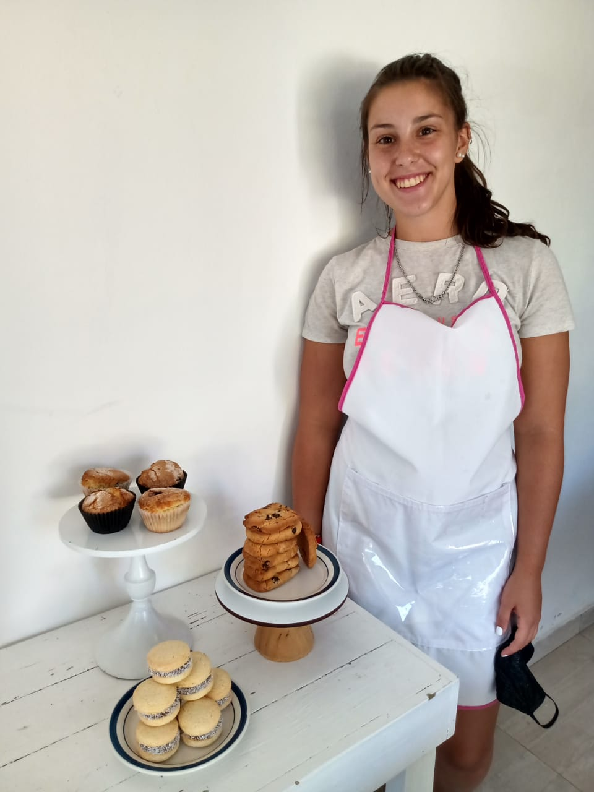
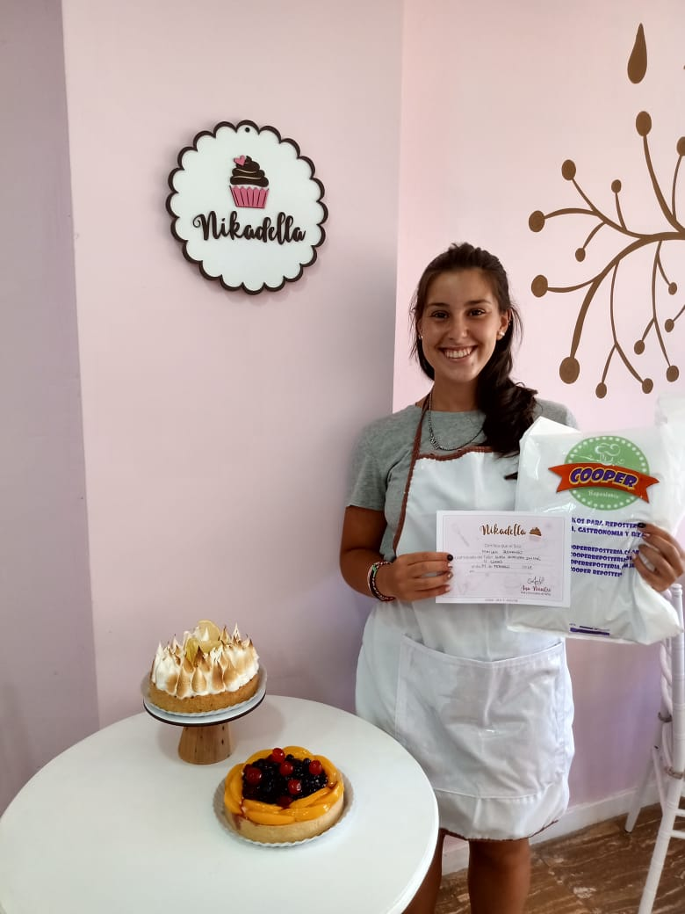

Sobre Mi
¿Por que pasteleria?

Hola! Yo soy Mailen Busnengo, tengo 18 años y les voy a contar un poco de mi y de mi emprendimiento!.
Desde muy chica veía programas de cocina, todo tipo de programas me gustaba ver ,ya sea salado o dulce, aunque siempre lo dulce me llamó mas la atención.
En 2018 le pedi a mi abuela Choli una receta que hacia ella, los bollitos de canela y azucar. Son bocaditos ideales para comer con un cafe o mate!. Esos bollitos me encantaban, pero mi abuela los hacia poco (ya que llevan mucho tiempo), por ende me la pasó.
Una vez lleve a la escuela para compartir con mis amigos/as, les encantaron. Les gustaron tanto que me empezaron a pedir mas y mas. Asi empezo mis primeras ventas, con bollitos de canela y azucar.
Como todos sabemos, despues cayó la pandemia en Rosario. Durante el Covid-19 tenia mucho tiempo libre, queria hacer algo para que el dia se pase mas rápido, asique empecé a cocinar budines, tortas, alfajores, etc. Todo para mi familia.
Educacion Profesional
En agosto del año 2020, hablando con mis familiares y amigos me dijieron que me ponga un emprendimiento de postres dulces ya que lo que habian probado anterirmente les habia gustado.
Asi fue como el 11 de agosto del 2020 abrí mi pagina de instagram y empecé a vender!
Yo sabia poco y nada... veia videos de youtube y buscaba recetas por internet, por eso, en el verano del 2021 decidí hacer un curso de pasteleria básica, para poder aprender técnicas que eran necesarias para el tipo de tortas que yo vendía o quería vender. Meses mas tardes, segui incursionando en los cursos, en este caso empece el de tortas drip (Dripcake). Quedé encantada con el tema tortas, cada vez me gustaba mas y más. Por eso en julio del 2021 empece a estudiar pasteleria. Me anote en la carrera de Pastelero Profesional en la escuela CACAL. Donde tanbien estudiaré en el año 2022 la carrera de Maestro Pastelero. Durante cursaba la primera carrera decidi tomar un curso de macarons. Donde aprendí las tecnicas para hacer un macaron perfecto.
